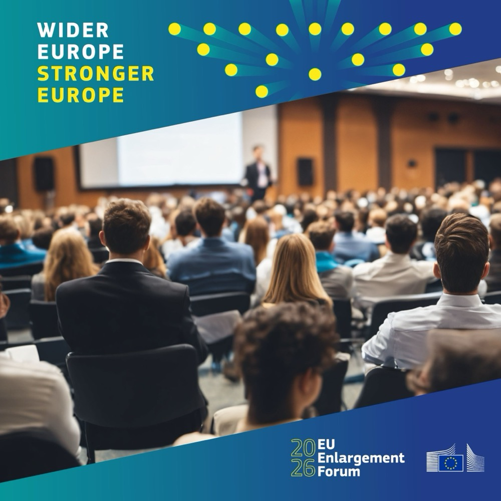
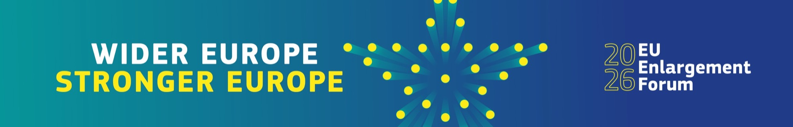

Europe Next Door
Oekraïne, uitbreiding en onze gedeelde Europese toekomst. Een reizende dialoogreeks door Nederland. Ukraine, enlargement and our shared European future. A travelling dialogue series across the Netherlands.
Het open gesprek over de weg van Oekraïne naar EuropaAn open conversation about Ukraine’s road to Europe
Oekraïne en andere landen onderhandelen over toetreding tot de Europese Unie. Wat betekent dat voor je stad, je werk, de landbouw en onze veiligheid?
Europe Next Door brengt het debat over EU-uitbreiding naar mensen die normaal niet bij Europese beleidsbijeenkomsten zitten. Oekraïne staat centraal: we bespreken de rechtsstaat, economische kansen, de arbeidsmarkt, landbouw en duurzaamheid, en de veiligheid van Europa.
Experts uit Nederland en Oekraïne delen feiten, persoonlijke verhalen en een stukje cultuur, zonder voorgekookte conclusies. Iedereen is welkom om mee te praten en vragen te stellen, ook kritische.
Ukraine and other countries are negotiating to join the European Union. What does that mean for your town, your job, agriculture and our security?
Europe Next Door brings the debate on EU enlargement to people who don’t usually attend European policy events. Ukraine is at the heart of it: we discuss the rule of law, economic opportunities, the labour market, agriculture and sustainability, and European security.
Experts from the Netherlands and Ukraine share facts, personal stories and a taste of culture, without predetermined conclusions. Everyone is welcome to join the conversation and ask questions, including critical ones.

Acht steden, acht dialogenEight cities, eight dialogues
Waar gaat de dialoog over?What is the dialogue about?
Wat levert een land als Oekraïne de EU op, en wat kost uitbreiding Nederland? En hoe blijft een Unie met meer lidstaten slagvaardig?What does a country like Ukraine bring to the EU, and what does enlargement cost the Netherlands? And how does a Union with more member states remain effective?
Economie en groeiEconomy and growth
Toegang tot de interne markt, handel en investeringen. Wat levert een grotere Europese markt op voor bedrijven en consumenten, hier en in Oekraïne?
Access to the single market, trade and investment. What does a larger European market mean for businesses and consumers, here and in Ukraine?
Arbeidsmarkt en migratieLabour market and migration
Vrij verkeer van werknemers, mogelijke overgangsperiodes en tekorten aan vakmensen. Hoe zorgen we voor eerlijke kansen aan beide kanten?
Free movement of workers, possible transition periods and skills shortages. How do we ensure fair opportunities on both sides?
Veiligheid en defensieSecurity and defence
Uitbreiding als geostrategische investering in vrede en stabiliteit. Wat betekent een sterkere oostflank voor de veiligheid van heel Europa?
Enlargement as a geostrategic investment in peace and stability. What does a stronger eastern flank mean for the security of all of Europe?
Landbouw en duurzaamheidAgriculture and sustainability
Voedselzekerheid, het Europese landbouwbeleid, energie en de groene transitie. Hoe past Oekraïne, een van ’s werelds grote landbouwproducenten, in de Unie?
Food security, the Common Agricultural Policy, energy and the green transition. How does Ukraine, one of the world’s major agricultural producers, fit into the Union?
Rechtsstaat en corruptiebestrijdingRule of law and anti-corruption
Onafhankelijke rechtspraak, sterke democratische instellingen en de aanpak van corruptie: het fundament van elk lidmaatschap. Toetreding gaat op basis van verdienste, zonder kortere routes.
An independent judiciary, strong democratic institutions and tackling corruption: the foundation of any membership. Accession is merit-based, with no shortcuts.
Een veilige plek om het oneens te zijnA safe place to disagree
Panelleden gaan met elkaar en met de zaal in gesprek, met volop ruimte voor vragen. Gevoelige onderwerpen kun je anoniem aankaarten via vraagkaarten. Vooraf is er een expositie over de weg naar EU-lidmaatschap, en elke bijeenkomst bevat een cultureel moment uit Oekraïne.
Panellists talk with each other and with the audience, with plenty of room for questions. Sensitive topics can be raised anonymously using question cards. Beforehand there is an exhibition on the road to EU membership, and every event includes a Ukrainian cultural moment.
SpelregelsHouse rules
Onenigheid is welkomDisagreement is welcome
Steun, twijfel en kritiek hebben allemaal een plek.
Support, doubt and criticism all have a place.
Elke vraag teltEvery question counts
Alle vragen zijn legitiem, zolang ze respectvol worden gesteld.
All questions are legitimate when asked respectfully.
Feit, ervaring of mening?Fact, experience or opinion?
Sprekers maken duidelijk waar ze het over hebben.
Speakers make clear which one they are sharing.
Onafhankelijke moderatorIndependent moderator
Die bewaakt de spreektijd en betrekt ook de stillere stemmen.
Balances speaking time and brings in quieter voices.
Wie praat er mee?Who’s joining the conversation?
Maak kennis met onze moderator en panelleden. Nederlandse en Oekraïense perspectieven, van beleid tot persoonlijke ervaring. Meer panelleden volgen.Meet our moderator and panellists: Dutch and Ukrainian perspectives, from policy to personal experience. More panellists to follow.
Word panellid in jouw stadJoin the panel in your city
We breiden het panel uit en zoeken per stad panelleden die hun kennis of ervaring willen delen, bijvoorbeeld:
We are expanding the panel and are looking for panellists in each city who want to share their knowledge or experience, for example:
- experts op het gebied van EU-uitbreiding, veiligheid, economie, landbouw of de arbeidsmarkt;
- ondernemers, lokale bestuurders en vertegenwoordigers van maatschappelijke organisaties.
- experts in EU enlargement, security, the economy, agriculture or the labour market;
- entrepreneurs, local officials and representatives of civil-society organisations.
Onderdeel van een groter Europees gesprekPart of a wider European conversation
Europe Next Door is een officieel satellietevenement van het EU Enlargement Forum 2026 van de Europese Commissie, op 16 november.Europe Next Door is an official satellite event of the European Commission’s EU Enlargement Forum 2026, on 16 November.

Volg het Forum en praat mee met #EUEnlargement en #EUEnlargementForum.Follow the Forum and join the conversation with #EUEnlargement and #EUEnlargementForum.
Naar het ForumVisit the Forum ↗Contact
- info@brandnewukraine.nl
- PersPress
- Journalisten zijn welkom. Meld je vooraf aan via e-mail.Journalists are welcome. Please register in advance by email.
- Web
- brandnewukraine.nl